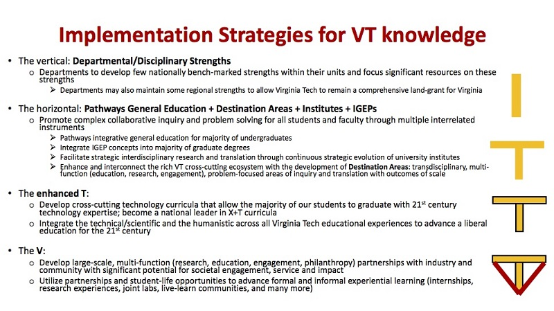

Introduction
Hello, my name is Ethan Proffitt and I’m a senior at Virginia Tech. I’m so glad you chose to become a Hokie this fall! While I have taken three years worth of college courses, at this present moment my digital writing skills are limited to the trivial fields of social media like Facebook and Twitter. Not the less, I hope this website will give you a firm grasp on what it means to be a VT-shaped student through my own account of my experience as a Hokie! The VT-shaped initiative that our school has launched is yet another way Virginia Tech separates itself from other schools in Virginia, and across the country. I absolutely love the VT-shaped student idea because it promotes a true education; as opposed to one that is centered in just one narrow field of academic study. My hope is that after you read this, you’ll be as excited as I am to go and acquire the skills and experiences here at Virginia Tech that will make you a VT-shaped individual!
My Interests
Christ's Church at Virginia Tech
Christ's Chrurch at Virginia Tech is a great campus ministry I have been apart of here at Virginia Tech. They engage in service projects all over the area, student ministry, and showing the grace of Christ everywhere they go.
The Work of a "VT-Shaped" Student
The Vertical "T"
Like any other student at any other University, one of the student’s roles is to practice and work in the field in which he or she is studying. This is no different at Virginia Tech, and such encompasses the vertical portion of the “T” in “VT.” By this principle, a student is expected to carry out our school motto, “Ut Prosim” (that I may serve), by utilizing the skill they gathered with their respective discipline.
The Horizontal "T"
One of the things that sets Virginia Tech apart from other institutions is our emphasis on Interdisciplinary Studies while enrolled on campus. Students are expected not only to have a deep understanding of their major, but also to be familiar and comfortable with other fields. This is the composition of the horizontal portion of the “T.” Such knowledge will allow them to be a helping hand in serving their community in way other than that in which they primarily study.
The Enchanced "T"
For better or worse, in those communities, students will find technology. It is for that reason that Virginia Tech is so enthusiastic about the “enhanced T.” This is all about students having a string grasp on the technology that shapes the world we live in today. No matter what form it takes, the administration at Virginia Tech want each student to be able to wield technology so to further aid the communities they find themselves in.
The "V"
These three principles all connect back to the fourth and final principle of the “VT-shaped” student, the “V.” This how a student will build bonds and connections with their community through industry, internships, research, or a host of other ways. These connections will help the student execute the other three principles of being “VT shaped;” and in doing so will contribute to the betterment of the world around them. All of these things are considered to be the work and duty of a “VT-shaped” student.
A Visual Representation of the "VT-Shaped" Student
Why I am a "VT-Shaped" student
I firmly believe I am an embodiment of the “VT-Shaped” student. In this section, I will go through different portions and principles of the “VT-Shaped” student, and provide examples of how my experiences since becoming a Hokie have made me such. I will also explain where I hope my "VT-Shaped" education will take me after graduation; as well as know I think you can maximize it for your own benefit.
The Vertical "T"
Since coming to Virginia Tech and declaring as an English major, I have devoted myself to developing a deep understanding of the curriculum that Virginia Tech’s Liberal Arts and Human Sciences College has laid for those in the English department. To create an even deeper knowledge of the study of English, I added the Professional and Technical Writing major to my Language and Literature degree plan. This way, I can see and practice as many different angles on the English language while still graduating in four years. After three years, my grade point average in my discipline is 3.71; and I feel I have learned such a wealth of knowledge regarding how mankind communicates, writes, and reads in the English language. Through my knowledge of human communication and the use of the English language, I will be able to better serve my community.
The Horizontal "T"
Surely, as I move through this world, I will find instances where my knowledge of English will not be as applicable as in other cases. This is where why the horizontal portion of the “T” is so important. Virginia Tech recognizes this, and puts an emphasis on interdisciplinary study. The familiarity I have achieved in disciplines like Political Science, History, and Sociology, will allow me to be a broader influence for good in my community. In addition, organizations like Christ’s Church at Virginia Tech and Young Americans for Liberty have helped me learn about public service and avocation during my time here. All of these experiences will taken with me as I venture through life and seek to fulfill the premise of “Ut Prosim.”
The "V"
Though I feel the execution of the “V” portion of the “VT-Shaped” student is done mostly after graduation; I believe I have already taken steps to accomplish to intent of this principle. This past semester, I was an intern teacher at Christiansburg High School. The opportunity to serve there really helped me see what it meant to be “VT-Shaped.” I was able to use my skills in English to help the students in my class with their own studies of literature and writing. Furthermore, I utilized my knowledge of political science and public discourse to aid them during a unit on debate and persuasive writing. The interpersonal skills I honed while serving at Christ’s Church at Virginia Tech also helped me interact with the students in a more meaningful way. Through that internship, and my involvement with my extra-curricular groups; I have already begun to make construct links between myself and the Blacksburg/Christiansburg community.
My Plans and Goals
After I graduate and depart from Virginia Tech, I will pursue a career in industry. Whether that be technical writing, analyst, or anything else that employs my skills as a writer and communicator. While doing so, I hope to continue to be a “VT-shaped” individual. Of course, I hope my expertise in the utilization of English will promote positive outcomes in both the workplace and beyond, but as you now know, being “VT-shaped” is more than that. One of the goals I will set for myself upon graduation is to use the knowledge I have accumulated by studying other disciplines to be a more well-rounded employee and citizen of my community. Through this, it will be much easier to continue to build bridges between myself and members of my community, as I have begun to do already.
My Recommendations to You
Primarily, my advice to you as a new student at Virginia Tech is to aim as high as possible in regards to what you will do with your education; while maintaining a first grasp on the reality of the world you will enter into upon graduation. When I enrolled at Virginia Tech, my plan was to become a high school teacher. I had visions of grandeur of kind of teacher I would be and how I could influence the lives of students. In spite of that, once I developed a more clear version of what it meant to be a teacher, my plans changed. This is one of the great things about the “VT-shaped” student concept. Had it not been for the emphasis on doing things like internships, I might have ended up making the wrong career choice for myself. So, as a student on their way out of Virginia Tech, to one on their way in, I hope that you will strive for the best possible outcome from your education here; but also that you will become very aware of the work environment that you have chosen will be like, and how the world around you might change it. Most importantly, I hope you will fully embrace the template of the “VT-Shaped” student, and work hard to be all that it (and yourself), can bring you to be.
Sources
Image Citations
- Christ's Church at Virginia Tech logo: Christ's Church at Virginia Tech. CCVT Logo. Digital image. Christ's Church @ Virginia Tech. N.p., n.d. Web. 5 June 2017.
- Young American's for Liberty logo: Young Americans for Liberty. YAL Logo. Digital image. Github. Ben Doernberg, 22 Oct. 2013. Web. 5 June 2017.
- Visual Representation of the "VT-Shaped" Student: This was a locally stored image given to me by Dr. Carlos Evia in his ENGL 3844 course at Virginia Tech
- © All rights reserved.
- Design: HTML5 UP